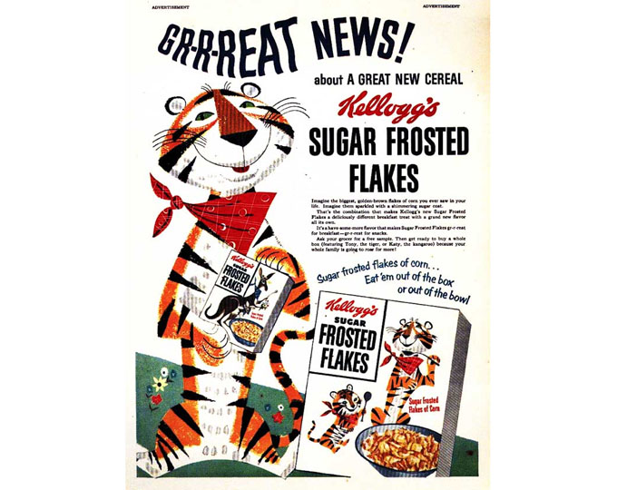
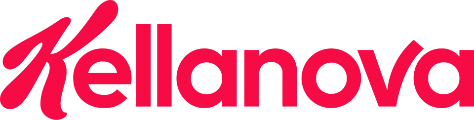
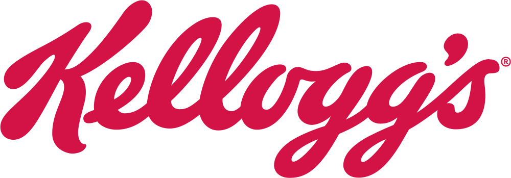

홈 > 브랜드 매거진 > 켈로그
켈로그
켈로그(Kellogg's)는 윌 키스 켈로그가 1906년 설립한 미국의 아침식사 시리얼 브랜드이다.
산업 분야 식음료 · 공개 등급 편집 검수 · 브랜드 평가 4.7 ★


한눈에 보는 브랜드
켈로그는 1906년 윌 키스 켈로그(W.K. Kellogg)가 미국 미시간주 배틀크릭에서 배틀크릭 토스티드 콘플레이크 컴퍼니로 세운 시리얼 기업이다.
요양원에서 비롯된 구운 옥수수 플레이크를 아침식사용 가공식품으로 상품화해 대량생산했고, 콘플레이크를 토대로 세계 최대 즉석 시리얼 브랜드로 성장했다. 2023년 회사를 북미 시리얼의 더블유케이켈로그(WK Kellogg)와 글로벌 스낵의 켈라노바(Kellanova)로 분할했다.
브랜드 관점
첫째, 경쟁 차별점이다. 제너럴밀스가 첵스·치리오스로 맞서지만 켈로그 계열은 세계 즉석 시리얼의 약 38퍼센트를 점유해 2위 대비 세 배가 넘는 격차를 유지한다.
토니 더 타이거 같은 캐릭터 자산과 콘플레이크 원조 지위가 방어막이다. 둘째, 2023년 10월 분할로 성장 둔화한 북미 시리얼을 WK켈로그로 떼어내고, 프링글스·치즈잇·팝타르트 중심의 켈라노바를 고성장 스낵 기업으로 재편했다.
셋째, 2024년 8월 마스(Mars)가 켈라노바를 주당 83.5달러, 약 359억 달러에 인수하기로 합의하고 2025년 말 거래를 마무리해, 켈라노바가 비상장 가족기업 마스 산하 스낵 부문으로 편입된 점이 최대 함의다. 한국에서는 1981년 농심과의 합작사 농심켈로그가 시장을 이끌며 포스트와 양분 구도를 형성했다.
시작과 성장
출발점은 1894년 배틀크릭 요양원이다. 원장이던 형 존 하비 켈로그와 동생 윌 키스 켈로그가 환자 식단을 개선하려 밀 반죽을 실험하던 중, 방치된 반죽을 롤러에 통과시키자 낱장 플레이크가 떨어진 우연에서 곡물 플레이크가 탄생했다.
옥수수로 바꾼 콘플레이크가 환자들에게 인기를 끌자, 사업 감각이 뛰어난 동생 윌 키스가 1906년 2월 회사를 세워 첫해에 약 17만 5천 상자를 출하했다. 형제는 켈로그 상표를 두고 갈등했고, 윌 키스가 1911년 소송에서 미국 내 독점 사용권을 확보한 뒤 국제 권리까지 넓혔다.
이후 해외 공장을 세워 영국·호주 등으로 확장했고, 2012년 프록터앤드갬블에서 감자칩 프링글스를 약 27억 달러에 사들이며 스낵으로 영역을 넓혔다.
브랜드 아이덴티티
정체성의 핵심은 건강한 아침식사라는 창업 가치와 곡물 가공의 원조라는 자부심이다. 시각 자산의 정점은 1952년 레오버넷이 만든 호랑이 캐릭터 토니 더 타이거로, 주황 몸체에 빨간 스카프를 두르고 '그뤠잇'이라는 굵은 외침을 트레이드마크로 삼았다.
강렬한 빨강을 주조색으로 쓴 로고타입은 창업자 윌 키스의 손글씨 서명에서 비롯됐다. 타깃은 어린이와 가족이며, 보이스는 활기차고 친근하면서도 영양과 신뢰를 강조하는 어조를 유지한다.
제품과 서비스
대표 제품은 원조 콘플레이크, 설탕을 입힌 프로스트(한국명 콘푸로스트), 초콜릿 코팅의 첵스, 그리고 통 포장 감자칩 프링글스다. 한국 마트에서 콘푸로스트 600그램은 대략 5천원대 후반에서 7천원대, 프링글스 한 통은 3천원대 안팎에 유통된다.
채널은 대형마트와 슈퍼마켓 같은 전통 소매에 더해 전자상거래와 퀵커머스로 넓어지고 있다.
현재 상태
분할 후 구조는 두 축이다. 북미 시리얼을 맡은 WK켈로그는 본사를 발상지 배틀크릭에 두고 콘플레이크·프로스트·라이스크리스피 등으로 연 약 24억 달러 매출을 올린다.
글로벌 스낵·국제 시리얼을 담당하는 켈라노바는 본사를 시카고에 두고 2024년 약 134억에서 136억 달러 규모의 순매출을 전망했으며, 2025년 말 마스 인수가 마무리되어 비상장 마스 그룹 스낵 부문으로 통합됐다. 통합 이후 세부 부문별 손익 등 일부 내부 지표는 미공개다.
타임라인
BI/CI 변천사

대표 로고대표 브랜드 마크
BI/CI 아카이브BI/CI 아카이브함께 읽을 브랜드
 식음료 · 자료 기반농심
식음료 · 자료 기반농심농심(Nongshim)은 신라면으로 유명한 한국의 대표 라면·스낵 기업으로, 1965년 설립돼 1978년 농심으로 사명을 바꿨다.
네슬레(Nestlé)는 스위스 브베에 본사를 둔 세계 최대 규모의 식음료 다국적 기업이다.
BI
비비고
식음료 · 자료 기반비비고비비고(bibigo)는 CJ제일제당이 2010년 출시한 글로벌 한식 브랜드로, 만두·김치·즉석밥·한식 소스 등 100여 종의 한국 식품을 약 70개국에서 판매한다.
DF
동서식품
식음료 · 자료 기반동서식품동서식품(Dongsuh Foods)은 맥심(Maxim) 커피로 유명한 한국의 인스턴트 커피 기업으로, 1968년 설립됐다.
 식음료 · 자료 기반동원
식음료 · 자료 기반동원동원(Dongwon)은 동원참치로 유명한 한국의 수산·종합식품 기업으로, 동원그룹 모태는 1969년 창업했다.
 식음료 · 매거진 완성코카-콜라
식음료 · 매거진 완성코카-콜라코카-콜라는 음료의 맛보다 함께 마시는 순간의 감정을 브랜드 자산으로 축적해 왔다. 병의 형태, 색, 광고 언어, 공유의 장면이 반복되면서 제품은 탄산음료를 넘어 친...
 식음료 · 편집 검수말보로
식음료 · 편집 검수말보로말보로(Marlboro)는 필립 모리스가 1924년 도입한 미국의 담배 브랜드이다.
버거킹는 미국의 식음료 브랜드로, 맛, 메뉴 구성, 패키지, 매장 또는 유통 채널이 함께 브랜드 경험을 만드는 영역입니다.